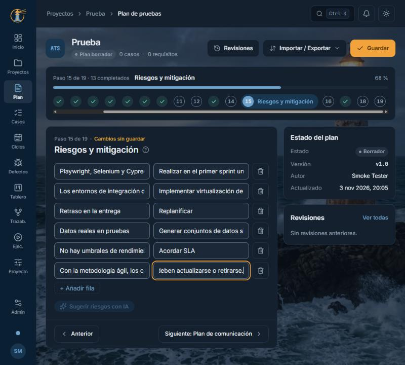

Mantener la lista de pares, pero con campos que crecen con su contenido y una sola cabecera «Riesgo | Mitigación». Si el campo mide menos de 480 px, cada par se apila con su etiqueta. Un solo cambio en PairListField arregla también «Roles» y «Criterios de cierre».
Los tres revisores llegaron por separado a esta misma solución y descartaron las filas plegables. Plegar vuelve a esconder justo lo que hay que revisar antes de pulsar «Marcar revisado».
Interpretación: el pedido decía que los contenidos «pueden ser poco extenso». Por la captura entendí que el problema es el texto extenso. La propuesta sirve para los dos casos: una fila corta sigue ocupando una sola línea, 38 px, como hoy.
Coste: la lista ocupa más. Con 6 filas en tu pantalla pasa de 268 px a unos 526 px. Es el precio de leer todo sin abrir ni desplazar nada.
Son campos reales con la anchura y los colores de Pharos, y textos de ejemplo. Escribe, usa Tab, añade y quita filas. No está conectada a la app ni guarda nada.

| Ventana | Caja del campo | Se ve de 141 caracteres |
|---|---|---|
| 940 px | 220 px | 21 % |
| 768 px | 276 px | 27–29 % |
| 375 px | 124 px | 10–11 % |
| 940 px, confirmando borrar | 158 px | menos aún |
Por la fila más larga, de 224 caracteres, a 940 px solo se ve el 13 %.
| Gravedad | Problema | Comprobación |
|---|---|---|
| Crítica | «Marcar revisado» da por revisado un texto del que se ve entre el 10 % y el 29 %. La propuesta de la IA se lee entera y, al aceptarla, queda cortada.fields.tsx:170-190 · ProvenanceBadge.tsx:34 · StepBody.tsx:291-296 | Medido en la app |
| Alta | La confirmación de borrado cambia de fila. Pedí borrar «Los entornos…», quité otra fila antes y la confirmación pasó a «Retraso en la entrega». Al pulsar «Sí, eliminar» se borraría la fila equivocada.fields.tsx:22,168 (key={i}) | Reproducido en la app |
| Alta | Al pulsar la papelera, el foco cae en BODY: quien usa teclado o lector de pantalla pierde su sitio. WCAG 2.4.3.fields.tsx:41-75 | Reproducido en la app |
| Alta | La única etiqueta visible es el placeholder, y desaparece al escribir. Con la lista llena nada dice qué columna es cuál. WCAG 3.3.2.fields.tsx:174,184 | Visto en la app |
| Media | En móvil se mantienen dos columnas de 124 px. El texto no se puede revisar.fields.css:151-160 | Medido en la app |
| Media | Al confirmar un borrado, los campos encogen de 220 a 158 px: el texto que vas a borrar se ve aún menos.fields.css:289 | Medido en la app |
| Media | «Añadir fila» deja el foco en el botón, y hay que retroceder para escribir en la fila nueva. Además no se anuncia.fields.tsx:201-207 | Reproducido en la app |
| Media | El aviso de duplicado solo se asocia al primer campo de la fila.fields.tsx:171,181 | Leído en el código |
| Baja | Tamaños táctiles por debajo de la SPEC: papelera de 38 px y «Añadir fila» de 27 px, frente a 44 px en móvil.SPEC.md:102-103 | Medido en la app |
| Baja | Las reglas de estos campos están duplicadas en dos hojas de estilos.TestPlan.css:150-206 · fields.css:144-196 | Leído en el código |
Altura de la lista con las mismas 6 filas, de textos cortos y largos. La opción D está medida en la maqueta. Las demás salen de contar líneas con la fuente real y aplicar una fórmula, así que son aproximadas.
| Alternativa | 905 px | 606 px | 498 px | 302 px | Lee todo sin acciones | Compara el par | Veredicto |
|---|---|---|---|---|---|---|---|
| Hoy: inputs de una línea | 268 | 268 | 268 | 268 | No | No | Compacta pero no se puede revisar |
| A. Dos columnas que crecen | 526 | 715 | 883 | 1681 | Sí | Muy bien | En móvil, hasta 20 líneas por campo: inviable |
| B. Tarjetas apiladas | 1300+ | 1340+ | 1490+ | 1760+ | Sí | Regular | Una fila corta como «0» ocupa casi 4 veces más |
| C. Filas plegables | 280* | 280* | 280* | 280* | No | Solo abierta | Revisar 6 riesgos cuesta 6 clics y Ctrl+F no los alcanza |
| D. A que se apila bajo 480 px (recomendada) | 526 | 715 | ≈883 | 1759 | Sí | Muy bien; bien apilada | Lo mejor de A y B con un solo HTML |
Altura en px. * Todas plegadas; cada fila abierta suma entre 180 y 300 px. «+»: las tarjetas añaden su marco y relleno a esa cifra. Elegí 480 px por lo medido: a 498 px, apilar costaba 1486 px frente a 883 en dos columnas. A ese ancho quedan unos 29 caracteres por línea, el mínimo razonable; por debajo conviene apilar. En móvil, D ocupa algo más que A (1759 frente a 1681), pero con 6 líneas por campo como máximo en vez de 20.
| Situación | Comportamiento propuesto |
|---|---|
| Texto corto | Una línea: 38 px en escritorio y 44 px en móvil. Casi igual que hoy. |
| Texto largo | El campo crece y el texto se ajusta. Los dos campos del par miden lo mismo, con el texto arriba, y la papelera queda arriba a la derecha. |
| Texto muy largo | Tope de 12 líneas (270 px), con barra de desplazamiento solo a partir de ahí. Cubre unos 300 caracteres en cualquier ancho y evita que un texto pegado rompa el paso. |
| Etiquetas | Dos columnas: una cabecera visible, sin placeholder. Apilado: etiqueta sobre cada campo. Siempre hay un <label> real, con «Fila N» solo para lector de pantalla. |
| Teclado | Tab va de Riesgo a Mitigación y a la papelera, en ese orden, en los dos diseños. Enter inserta un salto de línea. Tab nunca queda atrapado y no hay atajos nuevos. |
| Añadir fila | El foco pasa al primer campo de la fila nueva, solo cuando la añade la persona. Las filas que añade la IA no mueven el foco. |
| Borrar | La confirmación aparece bajo la fila, sin encoger los campos, y el foco va a «Cancelar». Cancelar devuelve el foco a la papelera. Al confirmar, va al primer campo de la fila que ocupa ese lugar y se anuncia «Fila N eliminada». |
| Móvil y zoom 200 % | Se decide por el ancho del campo con @container, no por el de la ventana, como pide la SPEC. Así funciona también con el panel lateral abierto. Objetivos táctiles de 44 px. |
Comparten el componente, así que mejoran con el mismo cambio y sin código propio. Elige «Cierre» o «Roles» en la maqueta para verlo.
ListField): tiene el mismo corte y el mismo fallo de confirmación. El arreglo de la confirmación también le sirve; hacerla crecer queda para otro cambio.src/shared/ui/fields.tsx: cambiar input por textarea rows={1} con label real, cabecera única, ol/li dentro del grupo y prop opcional de columnas. Quitar los placeholders. Asociar el duplicado a los dos campos.role="status" para los borrados.key={`${i}-${items.length}`} en DeleteButton. Al cambiar el número de filas, cualquier confirmación abierta se cierra. Sirve también para ListField, sin ids nuevos ni cambios de datos.src/shared/ui/fields.css: añadir field-sizing: content, el tope, @container a 480 px y la papelera con align-self: start. Sin soporte, usar 3 líneas y resize: vertical. Quitar las reglas duplicadas de TestPlan.css.TestPlanWizard.css: añadir scroll-padding-bottom para que el pie fijo no tape el cursor.StepBody.tsx:325: pasar las columnas 2:1 en cierre.planXlsx.ts ahora hace crecer esas filas. Una prueba cubre el viaje de ida y vuelta con saltos de línea en Excel; el PDF no se probó con ellos.src/test/a11y.test.tsx con foco al añadir, cancelar y borrar, duplicado en los dos campos y la regresión de la confirmación. Añadir pruebas de ListField.e2e/tours/03-plan.tour.ts:53, fillPairs busca input y hay que cambiarlo a textarea. Revisar también el tour de IA.docs/rediseno/SPEC.md, docs/manual/03-plan.md y las capturas afectadas, como img/plan/15-riesgos.png.Estado: implementado como UX-15 en la rama fix/ai-key-save-and-test, sin commit. En la app real, 6 filas miden 667 px con un campo de 640 px y 1846 px en móvil, sin texto cortado. La regla de scroll-padding se resolvió con scroll-margin en el campo, sin tocar TestPlanWizard.css.
steps.ts:62).field-sizing funciona en el navegador usado (Chrome 152).tauri.conf.json:31).field-sizing en otros navegadores: un revisor lo consultó en caniuse (Chrome 123+, Firefox 152+, Safari 26.2+); yo no lo repetí. Sin soporte, el texto sigue siendo accesible.